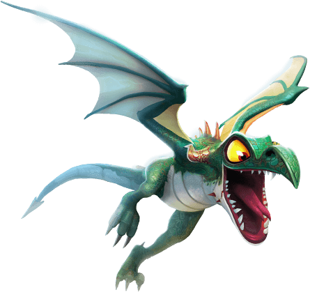
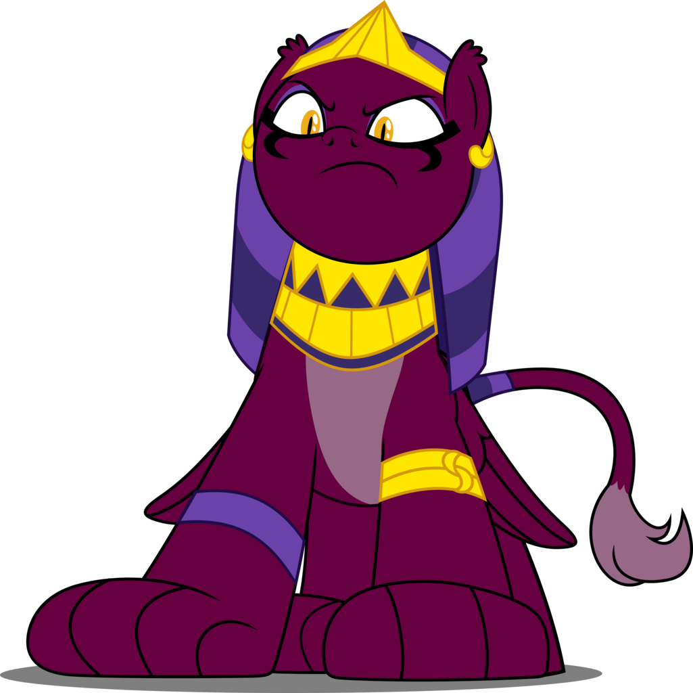
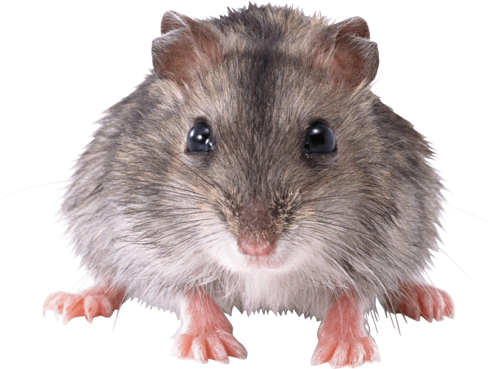

Select an animal!
Dragon
A dragon is a large, serpent-like legendary creature that appears in the folklore of many cultures around the world. Beliefs about dragons vary drastically by region, but dragons in western cultures since the High Middle Ages have often been depicted as winged, horned, four-legged, and capable of breathing fire. Dragons in eastern cultures are usually depicted as wingless, four-legged, serpentine creatures with above-average intelligence.
Unicorn

The unicorn is a legendary creature that has been described since antiquity as a beast with a single large, pointed, spiraling horn projecting from its forehead. The unicorn was depicted in ancient seals of the Indus Valley Civilization and was mentioned by the ancient Greeks in accounts of natural history by various writers, including Ctesias, Strabo, Pliny the Younger, and Aelian. The Bible also describes an animal, the re'em, which some versions translate as unicorn.
Sphinx
A sphinx (Ancient Greek: Σφίγξ [spʰíŋks], Boeotian: Φίξ [pʰíːks], plural sphinxes or sphinges) is a mythical creature with the head of a human and the body of a lion. In Greek tradition, it has the head of a human, the haunches of a lion, and sometimes the wings of a bird. It is mythicised as treacherous and merciless. Those who cannot answer its riddle suffer a fate typical in such mythological stories, as they are killed and eaten by this ravenous monster.[1] This deadly version of a sphinx appears in the myth and drama of Oedipus.[2] Unlike the Greek sphinx, which was a woman, the Egyptian sphinx is typically shown as a man (an androsphinx (Ancient Greek: Ανδρόσφιγξ)). In addition, the Egyptian sphinx was viewed as benevolent, but having a ferocious strength similar to the malevolent Greek version and both were thought of as guardians often flanking the entrances to temples.
Mouse
A mouse, plural mice, is a small rodent characteristically having a pointed snout, small rounded ears, a body-length scaly tail and a high breeding rate. The best known mouse species is the common house mouse (Mus musculus). It is also a popular pet. In some places, certain kinds of field mice are locally common. They are known to invade homes for food and shelter. Species of mice are mostly found in Rodentia, and are present throughout the order. Typical mice are found in the genus Mus.